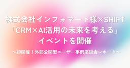

SHIFT Group 技術ブログ
https://note.shiftinc.jp
お客様の売れるソフトウェアサービス／製品づくりを支援する株式会社SHIFTの公式技術ブログ。AI開発・運用、教育・マーケティングなどあらゆる立場から携わるSHIFTグループ従業員が得た独自のナレッジを発信しています。※本アカウントに部分的にAI活用した記事が含まれます。
フィード
はじめての“社会とつながる学び” メルカリ様と一緒に考えた「モノの価値」と「誰かに届く喜び」そして「地球環境」
SHIFT Group 技術ブログ
こんにちは！SHIFT社内広報チームです。今回も、従業員のお子さんをお預かりして毎年開催している「シフトモKidsサマースクール」についてご紹介していきます。この記事では、メルカリ様にご協力いただき実施した講座についてお伝えしていきます。続きをみる
2日前
退職予防からキャリア自律・成長支援へ——AI 1on1「mentai」のマネジメント革命
SHIFT Group 技術ブログ
「めん太くん、実は最近ちょっとモヤモヤしとってさ……」 「そうなんやね。どんなことに一番モヤモヤしとる？一緒に整理していこっかね」続きをみる
3日前

【総務×AI】「AIとチャットだけ」の壁をどう超える？SHIFTが“作ったけど使わない”を歓迎した理由
SHIFT Group 技術ブログ
「そもそも投資予算が少ない」「日々の業務で手一杯」。続きをみる
4日前

AI面接ツールを社内開発し約5,000人が受験。「自社基準の言語化」を突き詰めた話
SHIFT Group 技術ブログ
「AI面接を検討してはいるが、本当に自社に必要な人材を見極められるのか」続きをみる
5日前

AWS Certified AI Business Strategist（AIB-C01）をCISSP/CISA観点で攻略する
SHIFT Group 技術ブログ
SHIFTのナショナルセキュリティ事業部所属の松尾です。続きをみる
5日前

株式会社インフォマート様×SHIFT「CRM×AI活用の未来を考える」イベントを開催 ～初開催！外部公開型ユーザー事例座談会レポート～
SHIFT Group 技術ブログ
こんにちは。株式会社SHIFT 営業推進グループの尾﨑です。続きをみる
5日前


今週の新着ブログ 3本_AIを相棒にインデックス未登録を調査_サマースクールのAI講座を地域へ(2026.9.25~10.1)
SHIFT Group 技術ブログ
こんにちは！「SHIFTグループ技術ブログ」編集部です。お役立ち記事を発信していますので、ぜひご注目ください！！本ブログは、IT技術だけでなくSHIFTグループのあらゆる知見やノウハウを広義の“技術”とし、入社歴や部署の垣根を超えて従業員が公式ブロガーとして記事を執筆しています。続きをみる
8日前
6年間子どもたちを見続けて分かったこと 。企業が子どもと関わる価値は、大きくなっていく
SHIFT Group 技術ブログ
こんにちは！SHIFT社内広報チームです。 この記事では、従業員のお子さんをお預かりして毎年実施している「シフトモKidsサマースクール」についてご紹介していきます。 前編では、「シフトモKidsサマースクール」が生み出している価値を、アンケート結果などをもとに整理しました。後編では少し視点を変えて、6年間子どもたちと関わってきた運営メンバーだからこそ感じる価値についてお話ししていきます。続きをみる
11日前
未来の働き方ってこんな感じ？6年間のサマースクールから生まれたAI講座を地域に届けてみた
SHIFT Group 技術ブログ
2026年夏、SHIFTは初めて「ヒルズ・ワークショップ フォー・キッズ*1」に参加し、小学4年生以上を対象に「きみだけの『未来の相棒AI』をつくろう」講座を開催しました。目を輝かせながらPCに向かい、自分だけのAIづくりに夢中になる子どもたち。ゲームを作る子。お小遣い帳を作る子。子どもたちは相棒AIとの会話を楽しみながら、次々とアイデアを形にしていきました。今回は、この講座がどのように生まれ、子どもたちにどんな学びを届けたのかをご紹介します。続きをみる
12日前
今週の新着ブログ 3本_IAMユーザーの管理方法を整理_SHIFT EVOLVE最新レポート_サマースクール運営の価値(2026.9.18~9.24)
SHIFT Group 技術ブログ
こんにちは！「SHIFTグループ技術ブログ」編集部です。お役立ち記事を発信していますので、ぜひご注目ください！！本ブログは、IT技術だけでなくSHIFTグループのあらゆる知見やノウハウを広義の“技術”とし、入社歴や部署の垣根を超えて従業員が公式ブロガーとして記事を執筆しています。続きをみる
12日前
Google Search Consoleの警告に焦らない！AIを相棒に大量の「インデックス未登録」の正体を突き止めた調査記録
SHIFT Group 技術ブログ
noteの技術ブログを6年運営していても焦ることがある！続きをみる
12日前
「夏休みの予定はシフトモKids前提で組む！」 6年目の今、改めてサマースクールの価値を整理してみた
SHIFT Group 技術ブログ
こんにちは！SHIFT社内広報チームです。2021年にスタートした「シフトモKidsサマースクール」は、今年で6回目を迎えました。■「シフトモKidsサマースクール2026」開催概要 日時 7月21日（火） 8月3日（月）～7日（金）8月17日（月）～21日（金） 9：00～18：15 場所 SHIFT 新宿第1オフィス/SHIFT本社 対象 SHIFTグループの従業員のお子さん（小学生・一部幼児） 参加費 無料（一部お出かけコンテンツを除く） ＊2026年の参加者数は、のべ321人続きをみる
16日前
これからは「工場」を設計する｜SHIFT EVOLVE 「どうする？AIが作るプロダクトの品質（AI Test Lab vol.4）」視聴レポート
SHIFT Group 技術ブログ
はじめに続きをみる
16日前
今週の新着ブログ 5本_40時間でG検定合格の勉強法_Policy as Codeを試してみた (2026.9.11~9.17)
SHIFT Group 技術ブログ
こんにちは！「SHIFTグループ技術ブログ」編集部です。お役立ち記事を発信していますので、ぜひご注目ください！！本ブログは、IT技術だけでなくSHIFTグループのあらゆる知見やノウハウを広義の“技術”とし、入社歴や部署の垣根を超えて従業員が公式ブロガーとして記事を執筆しています。続きをみる
22日前
コーディングエージェント時代のIaCレビューを考える ― Policy as Codeを試してみた
SHIFT Group 技術ブログ
こんにちは。株式会社SHIFT クラウドコンサルタント／アーキテクトの丸藤です。続きをみる
23日前
【SHIFTの技術ブログ】人気記事週間ランキングTOP10_SHIFTのFDE事例_なぜ指示待ち人間になるのか？ほか 2026/9/7-9/13
SHIFT Group 技術ブログ
『質問箱』はじめました！📬SHIFT Group 技術ブログへの質問続きをみる
1ヶ月前
今週の新着ブログ 5本_cc-sdd仕様駆動開発の実戦記録_LiteLLMとAWS Bedrockで社内向けLLM環境を作ってみた(2026.9.4~9.10)
SHIFT Group 技術ブログ
こんにちは！「SHIFTグループ技術ブログ」編集部です。お役立ち記事を発信していますので、ぜひご注目ください！！本ブログは、IT技術だけでなくSHIFTグループのあらゆる知見やノウハウを広義の“技術”とし、入社歴や部署の垣根を超えて従業員が公式ブロガーとして記事を執筆しています。続きをみる
1ヶ月前
【SHIFTの技術ブログ】人気記事週間ランキングTOP10 Anki導入_G検定勉強法_AI活用の業務分解事例 2026/9/1-9/6
SHIFT Group 技術ブログ
『質問箱』はじめました！📬SHIFT Group 技術ブログへの質問こんにちは、SHIFT Group 技術ブログ編集部です！月曜～日曜までの一週間で、もっとも読まれた記事をご紹介します。※殿堂入り記事を除く 続きをみる
1ヶ月前
今週の新着ブログ 5本_AZ-305：Designing Microsoft Azure Infrastructure Solutionsに挑戦！ほか(2026.8.28~9.3)
SHIFT Group 技術ブログ
こんにちは！「SHIFTグループ技術ブログ」編集部です。お役立ち記事を発信していますので、ぜひご注目ください！！本ブログは、IT技術だけでなくSHIFTグループのあらゆる知見やノウハウを広義の“技術”とし、入社歴や部署の垣根を超えて従業員が公式ブロガーとして記事を執筆しています。続きをみる
1ヶ月前